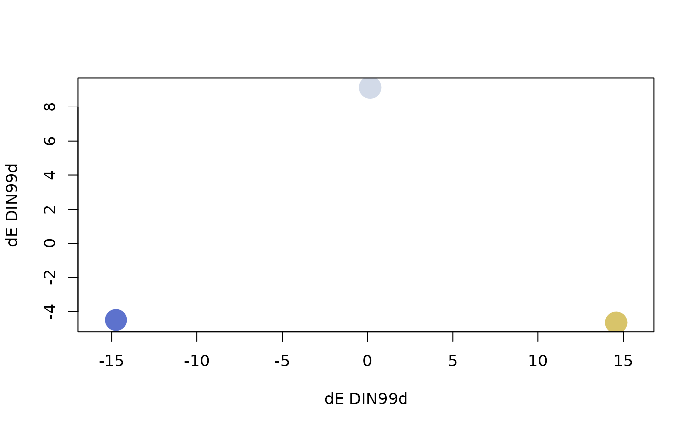

This function adapts color palettes to color vision deficiency (CVD) by
optimizing the CVD severity to try reach a target color difference (DIN99d
\(\delta E\)) of the user's choosing. Basically, it will choose a color
palette that is as close as possible to the target \(\delta E\) by
tweaking the CVD severity option in qualpal.
autopal(
n,
colorspace = "pretty",
cvd = c("protan", "deutan", "tritan"),
target = 20
)Number of colors to generate.
Either 1) a list of three named numeric vectors: h
(hue), s (saturation), and l (lightness), all of length 2
specifying a min and max value for the range. The values has to be in the
range -360 to 360 for h, and 0 to 1 for s and l 2), or
2) a character vector specifying one of the predefined color spaces
(see below).
Color vision deficiency adaptation to adapt the color palette to.
Target color difference.
A list of class qualpal with the following
components.
A matrix of the colors in the HSL color space.
A matrix of the colors in the DIN99d color space (after power transformations).
A matrix of the colors in the sRGB color space.
A character vector of the colors in hex notation.
A distance matrix of color differences according to delta E DIN99d.
The smallest pairwise DIN99d color difference.
The rationale for this function is that when there are few colors in a color
palette, there is no cost involved in adapting colors to CVD -- the colors
will still remain distinct. As more an more colors are added to the palette,
however, adapting the color palette to CVD will eventually lead to colors
that are too similar. This function gradually loosens the adaptation to CVDs
by lowering the severity of CVD to simulate to before picking colors (the
cvd_severity argument in qualpal)
pal <- autopal(3, cvd = "protan", target = 15)
plot(pal)
